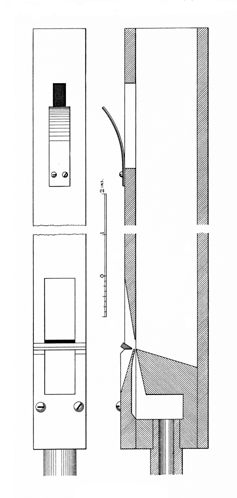

Oboe Echo English

|
Echo Oboe English Oboe Echo English |
|
Wedgwood and Irwin describe this stop as a softer and smaller scaled Oboe, which is usually (but not always) a reed stop. According to Wedgwood, the pipes are usually capped. Audsley does not mention a reed stop by this name, but describes a flue stop as follows:
An Echo Oboe, 8', made by [Edmund] Schulze, is inserted in the Echo division of the Organ of St. Bartholomew, Armley [England]; and an exact copy, by Mesrs. Abbott & Smith, is to be found in the Echo division of the Organ in Leeds Parish Church. In both Organs it speaks on wind of 1 1/2 inches; and its tone is somewhat plaintive in character and exquisitely sweet. The accompanying illustration gives a Front View and Section of the middle c1 of the stop in the Armley Organ. It measures internally 3/4 inch in width by 1 1/2 inches in depth; and has a speaking length of 25 inches, which allows for the slotting. The mouth is one-third its width in height, and is formed in the usual direct manner, having its upper lip straight and reduced to the thickness of an ordinary calling-card. The block is sloped on top and front as shown in the Section, its edge, which forms the lower lip of the mouth, is finished sharp and has no nicking. The cap is slightly hollowed on the inside to admit of the wind-way being formed : this is extremely fine and has nine slightly marked diagonal nicks. Externally the cap is sloped opposite the mouth, so as to leave only about the thickness of 1/40 inch at the wind-way, as indicated in the Section. A knife-edged harmonic-bridge is fixed at an angle across the mouth, resting on the cap, and leaving an air-slit between it and the adjoining edge of the cap, 1/16 inch wide. The treatment of all parts of the mouth is extremely delicate, demanding most accurate and careful workmanship. The fronts of the pipes should be of maple or pear-tree, and the blocks and caps of beech. The harmonic-bridges should be formed of boxwood. The upper ends of the pipes are slotted, and tuned by strips of spotted metal, covered with leather to prevent any vibration. This arrangement is shown in the upper diagrams. The scale of the c2 pipe is 7/16 inch in width by 7/8 inch in depth, and its mouth is one-third its width in height. The regulation of the wind supply to the mouths of the pipes in a stop of such extreme delicacy calls for metal-tipped feet, so as to admit of easy and nice manipulation. The foot of the middle c1 pipe has a hole in its tip of only about 1/8 inch in diameter, while that of the c2 pipe has a hole of 1/16 inch. The wood pipes of the Echo Oboe in the Armley Organ commence on tenor C. Below that note the stop is grooved into the Vox Angelica, 8 ft., in the same division of the instrument. It will be observed that the form of the harmonic bridge and the general treatment of the mouth closely resemble those of the Pedal Violone, 16 ft., in the same Organ.
Elsewhere Audsley says: �The voice of the stop is peculiar compound of reed-tone and string-tone, and is singularly delicate and pleasing, though not highly suggestive of that of the Oboe of the orchestra.� Wedgwood also mentions Schulze's stop, and adds: �The tone is indistinguishable from that of a reed. The voicing presented such difficulty that Schulze vowed he would never make another.� Regarding flue Echo Oboes, Irwin says �they lack the initial �spit� of harmonics so necessary for identification of this tone color and the other �woodwinds� �.
Wedgwood lists Oboe d'Amore as a synonym, but other sources describe it differently.
No other examples are known, though as of this writing (December 2000) the Armley organ apparently still exists.
|
Original website compiled by Edward L. Stauff. For educational use only. EchoOboe.html - Last updated 1 November 2001. |
Home Full Index |